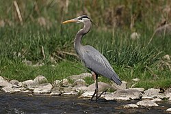

This website will be developed for the purpose of eventually utilizing machine learning models for classifying bird species. However, for the time being, this website will be used to demonstrate my knowledge of HTML and CSS. I am excited to learn more about web development and how it can be used in conjunction with machine learning. I hope to create a website that is both informative and visually appealing. I am looking forward to the challenges and opportunities that this project will bring.
The machine learning approach for bird classification will involve training a model on a dataset of bird images, extracting relevant features, and using these features to predict the species of new bird images.
Eventually I plan to also train an audio classification model that can classify bird species based on their calls. This will involve collecting a dataset of bird calls, extracting audio features, and training a model to recognize different species based on their vocalizations.
This will serve as a stepping off point for my future work in machine learning and my hobby of bird watching. In this site I will discuss the methodology of classification and the data that I will be using to train my models. I plan to limit it primarily to birds in the southeastern United States. As such I will provide reference to the most common birds in that region and the features that I will be using to classify them. I will also discuss the challenges that I anticipate facing in this project and how I plan to overcome them.